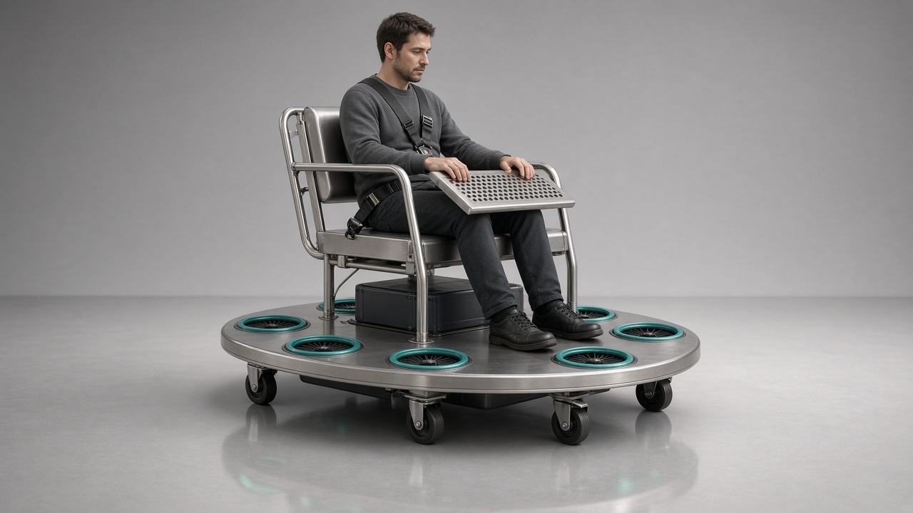
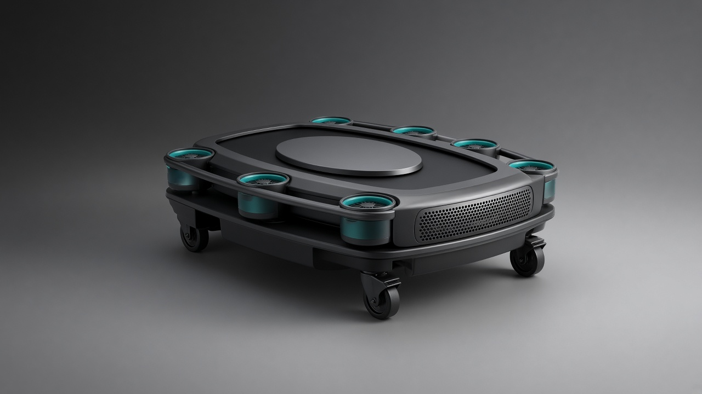

坐姿全向悬停 · 概念冻结 v1.1
载重 300 斤（人+物）· 人手动驾驶（无自动航线）。 坐姿舱 + 扁椭圆底 + 周向 6 涵道；飞控只增稳，去哪由人决定。
载重 ≤150 kg
手动驾驶
飞控仅增稳
周向 6 涵道
自动航线
开环手拧六电机
开放街道
⚠ 尺寸基准待修订 · 请先读收敛分析
本页图形基于早期紧凑构型（涵道紧贴扁椭圆底、整体偏小）。后续用 重量—功率—能量收敛速算 迭代求解发现： 该尺寸下闭环发散（总重↑ → 功率↑ → 电池↑ → 总重↑ 的正反馈死循环）， 物理上不成立，加电池也救不回来。
可行构型必须放大到：A 系留版 ⌀2.24 m（涵道 0.70 m × 6，缆绳定点供电） 或 B 混动版 ⌀3.84 m（涵道 1.20 m × 6，自由飞行）。 因此本页图形只代表操控方式与人机布局，不代表最终尺寸。
打开收敛速算与 A/B 方案对比 →已冻结（In）
- 载重 300 斤 = 人+物 ≤150 kg（空机另算）
- 人手动驾驶：起降、平移、转向都由人打杆
- 飞控只增稳 / 限幅 / 故障保护（不是航线程序）
- 坐姿 · 护栏 · 约束 · 前挡手柄
- 周向 6 涵道在脚下 · CG 在环内
- 轮 = 地面与着陆；空中靠涵道
明确不做（Out）
- 自动航线 / 一键任务飞行
- 无飞控开环手拧六个电机
- 穿戴式 / 站立托举 / 中心单喷
- 开放街道运行
- 本文件内的制造参数与 DIY


安全强化 · 六层（概念）
- L1 乘员：约束联锁 · 护栏 · 涵道防卷入 · 实体急停
- L2 包线：限高/限速/限倾角 · 超限只许降
- L3 冗余：六涵道 · 分区供电 · 单通道失效优先落地
- L4 着陆：触地卸推力 · 地面涵道闭锁
- L5 场地：台架→系留→无人，才谈载人
- L6 红线：开放街道永久 No-Go
人机安全分工
- 人：决定去哪、起降、转向（手动驾驶）
- 机：增稳 + 否决超限指令
- 不是：去掉飞控的“更纯手动”
- 不是：有了护栏就可以上街
详见 box-lift-safety.md
下一步（剩余）· 已完成 ✓
概念基线已闭合。后续唯一合理的投入是 非载人台架 / 系留验证，不是开模量产。
概念冻结稿，非制造/适航文件。不提供推力、功率、桨径、控制增益与制造步骤。未经许可不得载人试飞。